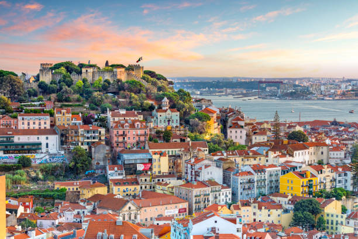

Multimedia
Fotografias:



Vídeo
Poesia
Lisboa ergue-se, branca e dourada, entre colinas de luz inclinada. No Tejo espelha-se o céu aberto, rio que embala o fado e o deserto.
Calçada antiga, passos sem pressa, ecoam histórias que o tempo atravessa. Elétricos sobem, descem sem fim, na Alfama canta-se o fado assim.
Cheiro a sardinha, Junho no ar, bairros em festa, difícil parar. Da Graça ao Bairro, do Chiado à Sé, Lisboa vive, quem vem não esquece.
Cidade de portas abertas ao mar, sempre partida, sempre a voltar. Lisboa é voz, memória e chão, um porto de alma, um coração.